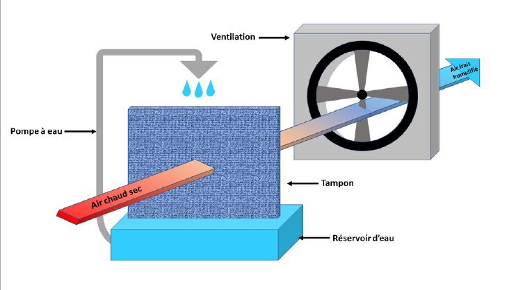
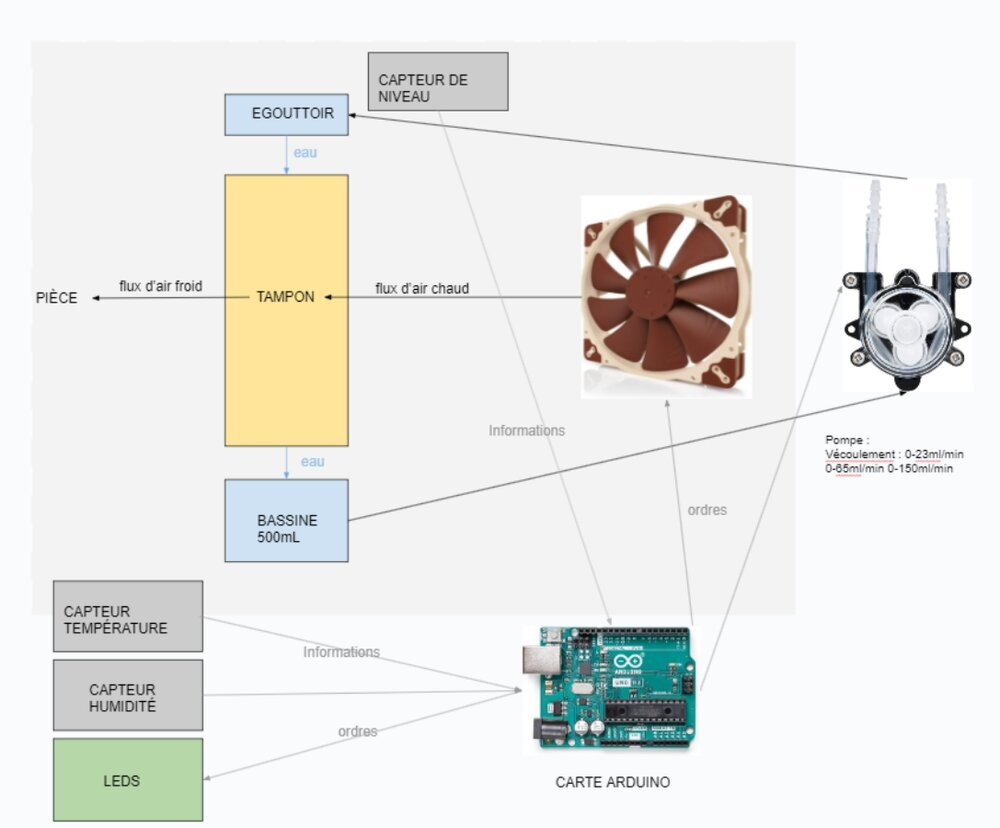
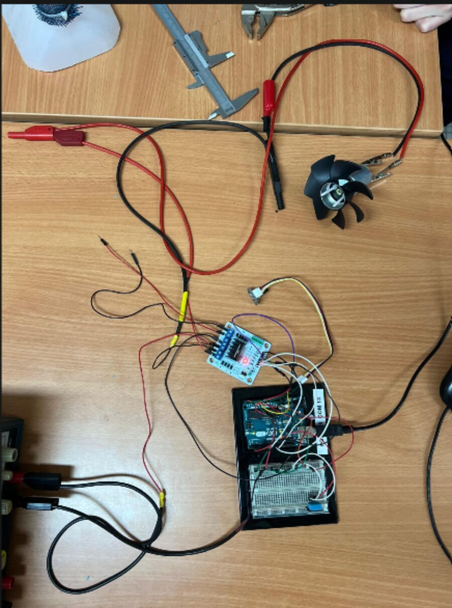

Projet de SI · Année de terminale (2024-2025) · Olympiades de SI · Non terminé
Le Ventileau
Une clim écologique qui refroidit l'air en faisant évaporer de l'eau, pilotée par un Arduino. Un projet d'équipe à trois, autour d'une question simple : comment rafraîchir sans réchauffer ?
Le problème
Cette année-là, le thème des Olympiades de SI était la transition écologique. Une climatisation classique refroidit une pièce en rejetant de la chaleur dehors, et consomme beaucoup d'électricité. Dans les pays très chauds, comme l'Inde, plus il y a de clims, plus les villes chauffent. Les rafraîchisseurs vendus pour la maison, entre 70 et 250 €, sont souvent bruyants et peu efficaces. On voulait un appareil compact, branché sur secteur, qui refroidit sans rejeter de chaleur.
Le principe adiabatique
Une pompe arrose un tampon avec l'eau d'un réservoir. Un ventilateur pousse l'air chaud et sec à travers ce tampon. En s'évaporant, l'eau absorbe de la chaleur : l'air ressort plus frais et un peu plus humide. Pas de gaz réfrigérant, pas de compresseur.

Le cahier des charges
| Fonction | Ce que l'appareil doit faire |
|---|---|
| F1 | Générer de l'air froid |
| F2 | Se brancher sur le secteur |
| F3 | Être compact |
| F4 | Récolter des informations sur son environnement (température, humidité) |
| F5 | Être étanche |
L'architecture
L'eau descend d'un égouttoir dans le tampon puis dans une bassine de 500 mL, et une pompe la remonte. Le ventilateur souffle l'air chaud à travers le tampon vers la pièce. La carte Arduino lit les capteurs de température, d'humidité et de niveau d'eau, et commande le ventilateur, la pompe et des LED. Nous avons aussi décrit le système en SysML : cas d'utilisation, exigences et diagramme de blocs internes.

Mesurer le moteur du ventilateur
Avant de choisir l'hélice, on a caractérisé le petit moteur au multimètre. Pour 5 V envoyés, on mesurait 4,22 V à ses bornes et 135 mA à l'ampèremètre :
P = U × I = 4,22 V × 0,135 A ≈ 0,57 W
Au tachymètre, il tournait à 975 tr/min sous 1,5 V, et il devenait bruyant à partir de 6 V. C'est ce qui a fixé la plage de tension utile pour le ventilateur.
Le montage
Le prototype électronique : une carte Arduino Uno, le capteur DHT11 sur une plaque d'essai, un driver moteur double (moteur A pour l'hélice, moteur B pour la pompe) et un potentiomètre pour régler la vitesse du ventilateur.


Le code
Le programme lit la température et l'humidité toutes les 10 secondes et les affiche sur le port série, puis règle la vitesse de l'hélice en PWM selon la position du potentiomètre. Voici code_final.ino en entier, tel que je l'ai rendu :
#include "DHT.h"
#define DHTPIN 2
#define DHTTYPE DHT11
DHT dht(DHTPIN, DHTTYPE);
int Pot;
int Val_led;
int ENA = 7;
int IN1 = 11;
int IN2 = 10;
int ENB = 4;
int IN3 = 5;
int IN4 = 3;
void setup() {
Serial.begin(9600);
pinMode(2, OUTPUT);
dht.begin();
pinMode(ENA, OUTPUT); //Configuré moteur A donc l'hélice
pinMode(ENB, OUTPUT); //Configuré moteur B donc la pompe
pinMode(IN1, OUTPUT);
pinMode(IN2, OUTPUT);
pinMode(IN3, OUTPUT);
pinMode(IN4, OUTPUT); //Sens de rotation
// Indice de commande
// digitalWrite(ENA/B,LOW/HIGH); => S'arrêter/S'allumer
// digitalWrite(IN1/2/3/4,LOW/HIGH); => Moteur direction
}
void loop() {
Serial.println("Temperature = " + String(dht.readTemperature()) + " °C"); //Capteur temp
Serial.println("Humidite = " + String(dht.readHumidity()) + " %"); //Capteur humidité
delay(10000);
if ('dht.readTemperature > 25.00') { //Si l'humidité est trop élevé, ça s'arrête
digitalWrite(ENA, LOW);
delay(1000);
}
digitalWrite(IN1, HIGH);
digitalWrite(IN2, LOW);
Pot = analogRead(A0);
Val_led = map(Pot, 0, 1023, 0, 255);
Serial.println(Val_led);
analogWrite(ENA, Val_led);
}
Avec le recul
En relisant mon code aujourd'hui, j'y vois plusieurs erreurs. La condition if ('dht.readTemperature > 25.00') compare un caractère entre guillemets et non la température, elle est donc toujours vraie. La broche du capteur était aussi déclarée en sortie, et la pompe (moteur B) n'était jamais commandée. Aujourd'hui j'écrirais if (dht.readTemperature() > 25.0) et je piloterais la pompe selon le niveau d'eau.
Les tests prévus
- Dans une boîte de 1 m³ à 25 °C, faire baisser la température de 5 °C en une heure, puis passer en mode économie.
- Relever la température toutes les 10 minutes pendant ce test.
- Rester sous 40 dB de bruit.
- Mesurer l'effet de la température de l'eau sur le refroidissement.
Pourquoi il n'est pas fini
Beaucoup de séances de SI sont tombées sur des jours fériés. On a eu le temps de concevoir le système, de mesurer le moteur et de faire tourner l'électronique, mais pas d'assembler le prototype complet ni de faire les tests. Ce projet m'a appris à écrire un cahier des charges, à modéliser un système en SysML et à mesurer avant de dimensionner.